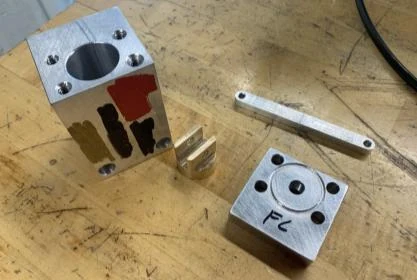
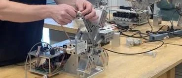

Work / Materials, Casting & Manufacturing, Mechanical Design & Product Development
Air motor piston and cylinder machining
A course project in turning a drawing into hardware: read the GD&T, choose a process, hold the dimension, and find out whether the assembly runs.
- Organization
- The Ohio State University, ME2900
- Role
- Machining course project
- Dates
- January – February 2025
- Status
- Complete
- Category
- Materials, Casting & Manufacturing, Mechanical Design & Product Development
Key results
0.001 in
Dimensional tolerance achieved on machined aluminum components
Measured
400+ RPM
Air motor speed when physically tested after assembly
Measured
- Measured
- Instrument reading from a test or inspection.
Objective
- Translate engineering drawings and GD&T requirements into physical components.
- Machine an air-motor subassembly to precision dimensional and surface requirements.
- Assemble and test the completed motor at 400+ RPM.
Process
- Machined aluminum components using manual mill and manual lathe operations.
- Used precision gauges and measurement techniques to verify dimensional accuracy.
- Evaluated how machining processes affect surface finish, geometry, and functional fit.
- Assembled the machined components and integrated the subassembly with the air motor.



Verification and results
Parts were checked with precision gauges against the drawing, and the finished motor was run on the bench. Components held 0.001 in tolerance, and the assembled air motor ran at 400+ RPM.


What I took from it
A practical understanding of design intent, manufacturing capability, precision cost, and inspection methodology. In particular, how datum selection, the machining process, surface characteristics, and measurement technique all influence final component performance.
Tools and methods
- Manual mill
- Manual lathe
- Precision gauges and measurement techniques
- GD&T drawings